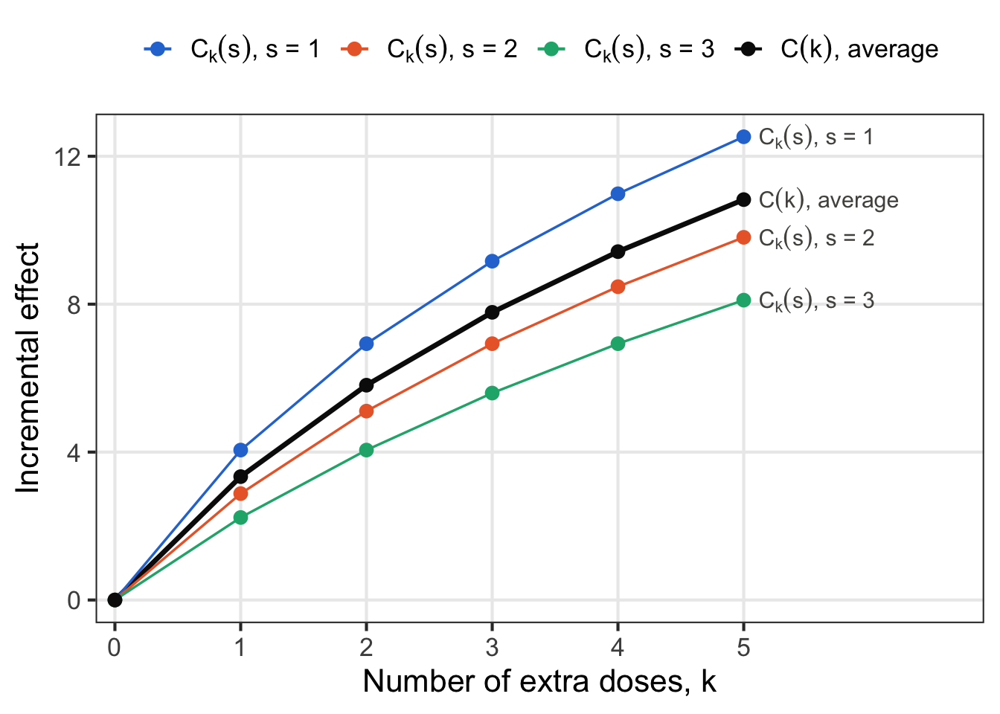
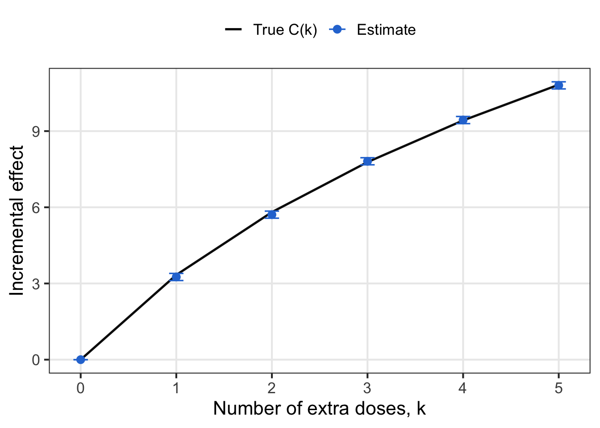

The term “average treatment effect” embodies two concepts - the treatment effect, which has a distribution, and its average over users. It is very precise, and yet the term is used loosely in the industry. This post will drill down into the mathematical underpinnings of what it means to be an average treatment effect, and explore its many variations such as the conditional effect, the marginal and relative effects, the incremental effect, the intent to treat effect and the local effect.
Grounding the mathematical foundations
What is an Average?
Say that we have a random variable \(Y\). It is able to take values in a set \(\mathcal{Y}\), and it has probability density \(f(y)\). Then the mathematical definition of an average has two parts, the value \(y\), and its probability density. It is computed as
\[E[Y] = \int_{\mathcal{Y}} y f(y) dy.\]
Transformations of the random variable, for example \(q(Y)\), have mean
\[E[q(Y)] = \int_{\mathcal{Y}} q(y) f(y) dy.\]
As we go over different types of effects, we will consolidate them all into the form
\[\int q(...) f( ...) d ..., \qquad f(...) \geq 0, \qquad \int f(...) d... = 1\] again emphasizing the product of a value and a probability weight.
Averages that Vary with Covariates
So far the value of \(Y\) varied randomly. Now say that it can vary as a function of covariates \(X\), which have their own probability density \(f(x)\), and the distribution of \(Y\) depends on \(X\) through the conditional probability density \(f(y | x)\). At this point there are three probability densities to remember, \(f(x)\), \(f(y)\), and \(f(y | x)\). In experiment analyses we can assume that we are given a fixed \(X = x\) value. The conditional mean for \(Y\) becomes
\[E[Y | X = x] = \int y \, f(y | x) \, dy.\]
The quantity is still \(y\), but the probability weight is now \(f(y | x)\). For each \(x\)\(E[Y | X = x]\) outputs a number. As \(x\) varies, \(E[Y | X = x]\) is a function of \(x\).
The unconditional average can be rebuilt from the conditional ones. The marginal probability density of \(Y\) is the conditional probability density averaged over \(X\), \(f(y) = \int f(y | x) f(x) \, dx\). We substitute this into the definition of \(E[Y]\), then swap the order of integration, which is allowed when \(E|Y| < \infty\):
\[\begin{align}
E[Y] &= \int y \left[ \int f(y | x) f(x) \, dx \right] dy \\
&= \int \left[ \int y \, f(y | x) \, dy \right] f(x) \, dx \\
&= \int E[Y | X = x] \, f(x) \, dx.
\end{align}\]
This is the law of iterated expectations. In our notation, the quantity is now the conditional average \(E[Y | X = x]\) and the probability weight is \(f(x)\). Averaging happens in two stages: first within the users who share the same \(x\), then across values of \(x\), weighted by how common each \(x\) is.
Most of the subtlety in this post is identifying the value and the probability weight. If we keep the quantity \(E[Y | X = x]\) but replace the probability weight \(f(x)\) with a different probability density, for example \(f(x | T = 1)\), the probability density of covariates among treated users, we get a different average, one over the covariates of treated users rather than of all users.
The Difference in Expectations
Now we apply this to an AB test. Each user \(i\) has two potential outcomes: \(y_i(1)\), the outcome if treated, and \(y_i(0)\), the outcome if not treated. When treated, user \(i\) receives an individual effect \(\tau(x_i)\) that depends on their covariates,
Here \(\mu_0(x) = E[y(0) | X = x]\) is the baseline, a scalar function of \(x\), so the noise satisfies \(E[\varepsilon | X = x] = 0\). We also write \(\mu_1(x) = E[y(1) | X = x]\). Taking the conditional expectation of the second line gives \(\mu_1(x) = \mu_0(x) + \tau(x)\).
We only ever observe one of the two potential outcomes. With \(T_i \in \{0, 1\}\) indicating whether user \(i\) was treated, the observed outcome is
This is the model from the post on controlled randomization, with a heterogeneous effect \(\tau(x)\) and a baseline that varies with covariates.
The difference in expectations compares the average outcome of treated users with the average outcome of untreated users. We apply the law of iterated expectations again within each arm, using that arm’s own covariate probability density, and then substitute the model for \(y\):
\[\begin{align}
E[y | T = 1] &= \int E[y | T = 1, X = x] \, f(x | T = 1) \, dx \\
&= \int \big( \mu_0(x) + \tau(x) + E[\varepsilon | T = 1, X = x] \big) f(x | T = 1) \, dx \\
E[y | T = 0] &= \int E[y | T = 0, X = x] \, f(x | T = 0) \, dx \\
&= \int \big( \mu_0(x) + E[\varepsilon | T = 0, X = x] \big) f(x | T = 0) \, dx \\
E[y | T = 1] - E[y | T = 0] &= \int \big( \mu_0(x) + \tau(x) + E[\varepsilon | T = 1, X = x] \big) f(x | T = 1) \, dx \\
&\quad - \int \big( \mu_0(x) + E[\varepsilon | T = 0, X = x] \big) f(x | T = 0) \, dx
\end{align}\]
So the difference in expectations is a difference of two integrals. Randomization means \(T\) is independent of both \(X\) and \(\varepsilon\), which has two consequences:
\(f(x | T = 1) = f(x | T = 0) = f(x)\), so both integrals use the same probability weight.
\(E[\varepsilon | T = t, X = x] = E[\varepsilon | X = x] = 0\), so the noise terms vanish.
With a shared probability weight, linearity of the integral gives the reduction
\[\boxed{\tau = E[y | T = 1] - E[y | T = 0] = \int \tau(x) \, f(x) \, dx}\]
This is our grounding for the word “average” in “average treatment effect”. The quantity is the personalized effect \(\tau(x)\), and the probability weight is \(f(x)\), the probability density of covariates.
Note that without randomization, the two integrals use different probability weights, \(f(x | T = 1) \neq f(x | T = 0)\) and the reduction breaks!
What does it mean to be a treatment effect?
Within the science of cause and effect, there are actually many different types of effects that we can report. Average effects, incremental effects, conditional effects, and relative effects. It can be daunting to manage the nuances of all of these different types of treatment effects, but actually we can consolidate them all under one roof. Mathematically, they are all different variations of an average.
Individual Effects and Conditional Average Treatment Effect
We start with the finest grained effect possible, then build our way up. The individual effect of user \(i\) is \(y_i(1) - y_i(0)\), which we can never truly observe. The conditional average treatment effect (CATE) averages the individual effects among users who share the same covariates,
As an average, the quantity is the individual effect and the probability weight is the conditional probability density of individual effects among users with \(X = x\). Let \(t\) denote a value of the individual effect \(y(1) - y(0)\), and let \(f(t | x)\) be its probability density among users with \(X = x\). Then
\[\tau(x) = \int t \, f(t | x) \, dt.\]
This is the same form as \(E[Y | X = x] = \int y \, f(y | x) \, dy\), with the individual effect in place of \(Y\).
Average Treatment Effect
Just as the CATE is the average of individual effects, the average treatment effect (ATE) is an average of the CATE over the covariate probability density,
The ATE is an average with respect to \(f(x)\), the covariate probability density of the population the experiment samples from. Here, it is very important to note who qualifies to be in the population. If an experiment only enrolls users who visit a certain page, then \(f(x)\) is the probability density among those visitors, and \(\tau\) is the average effect for visitors, not for all users.
Marginal Effect and Relative Effects
Given two mean functions, \(\mu_1(x)\) and \(\mu_0(x)\), there are two aggregation strategies that turn these functions into a single number for experimentation reporting.
The classic ATE computes \(\tau(x) = \mu_1(x) - \mu_0(x)\) at each \(x\), then averages. It starts from the granular level then aggregates. Uniquely, it’s fine to reverse the order of operations.
The other approach is to compute averages first, and then compare. We saw the importance of this in the post on ratio metrics.
and the marginal effect is a contrast of \(\mu_1\) and \(\mu_0\). This prompts an interesting thought though, is the relative effect an outlier in this taxonomy on averages? We will explain below that it is not.
The Difference: Order Does Not Matter
For the difference contrast, both orders give the same number. Using the linearity of the integral and then the definition of \(\tau(x)\),
For a nonlinear contrast, the two orders can give different numbers. The clearest example is the relative effect. The post on relative effects described an experiment with a few power users and many casual users, where the metric goes down for power users but up for casual users. To make it concrete, say power users make up 10% of users and have a baseline of 100, while casual users make up 90% and have a baseline of 1. The treatment lowers the metric of power users by 1% and raises the metric of casual users by 10%.
Segment
Share
Baseline
Relative effect
Power users
0.1
100
\(-1\%\)
Casual users
0.9
1
\(+10\%\)
Did the treatment move the metric up or down? There are two natural ways to answer.
How did the typical user change? We compute the relative effect within each segment, then average across users: \(0.1(-1\%) + 0.9(10\%) = +8.9\%\). Most users improved by 10%, so the answer is up.
How did the total change? We average the metric within each arm first, then compute the relative change. The control mean is \(0.1(100) + 0.9(1) = 10.9\) and the treatment mean is \(0.1(99) + 0.9(1.1) = 10.89\), so the relative change is \(\frac{10.89}{10.9} - 1 = -0.09\%\). Power users carry most of the volume, so the answer is down.
Neither answer is wrong, and neither is better. They are different interpretations of the same experiment. The first counts users, and the second counts volume. A team that wants to help as many users as possible is asking the first question. A team that reports total revenue is asking the second.
To see how the two are related, we write them in general. Assume \(\mu_0(x) > 0\) for all \(x\). The conditional relative effect is a function of \(x\),
In the example, \(x\) is the segment, and \(r(x)\) is the last column of the table. With a discrete covariate, an integral against \(f(x)\) becomes a sum over segments, weighted by their shares. The two answers generalize to
Contrast first, then average. The average of the conditional relative effects is \(\bar{r} = \int r(x) \, f(x) \, dx\).
Average first, then contrast. The marginal relative effect is \(R = \frac{\mu_1}{\mu_0} - 1\).
\(\bar{r}\) is already an average of \(r(x)\). At first glance \(R\) is a ratio of two averages rather than an average of anything. But it shares the same root, \(r(x)\). First we write \(R = \frac{\mu_1 - \mu_0}{\mu_0}\) and replace the numerator with \(\int \tau(x) f(x) \, dx\). Then we multiply and divide the integrand by \(\mu_0(x)\), which is allowed because \(\mu_0(x) > 0\):
The probability weight \(w(x)\) is a valid probability density. It is nonnegative because \(\mu_0(x) > 0\), and it integrates to \(\frac{1}{\mu_0} \int \mu_0(x) f(x) \, dx = 1\) by the definition of \(\mu_0\). Therefore the two approaches now have something in common
Both relative effects are averages of the same quantity, \(r(x)\). They differ only in the probability weight. \(\bar{r}\) uses \(f(x)\), which counts each user once. \(R\) uses \(w(x)\), which counts each user in proportion to their baseline volume. In the example, the probability weights for \(R\) are \(\frac{0.1 \cdot 100}{10.9} = 0.917\) for power users and \(\frac{0.9 \cdot 1}{10.9} = 0.083\) for casual users, and \(0.917(-1\%) + 0.083(10\%) = -0.09\%\) recovers the second answer. So choosing how to express the relative effect is simply choosing a probability weight.
The choice only matters when the relative effect is related to the baseline. The gap between the two is
where the expectations and the covariance are over \(X \sim f(x)\), and we used \(\int r(x) \mu_0(x) f(x) \, dx = E[r(X) \mu_0(X)]\) and \(\int \mu_0(x) f(x) \, dx = \mu_0\). When the relative effect is unrelated to the baseline, the two probability weights give the same answer. In the example, the users with large baselines have the worst relative effects, so the covariance is negative and \(R < \bar{r}\).
The Incremental Effect
So far we have discussed treatments and controls as binary. The incremental effect concerns treatments given in multiple doses. It measures the effect of providing an additional dose of the treatment.
A Curve of Potential Outcomes
Say each user \(i\) enters the experiment having already received \(S_i\) doses, which we call their prior dose, using \(S\) for the starting point. Different users have different prior doses, so \(S_i\) is a pre-treatment covariate, and we write \(f(s, x)\) for the joint probability density of \(S\) and the other covariates \(X\). The experiment randomizes an increment \(K_i \in \{0, 1, \dots, \bar{k}\}\), and user \(i\) receives a total dose of \(S_i + K_i\). Users in the control arm, \(K = 0\), continue with \(S_i + 0\) doses. Users in the top arm receive \(S_i + \bar{k}\) doses, and the arms in between receive \(S_i + 1, S_i + 2\), and so on.
In the binary case, each user had two potential outcomes, \(y_i(0)\) and \(y_i(1)\). Now each user has a potential outcome for every dose \(d\), so \(y_i(d)\) is a curve. From here on, the argument of \(y_i(\cdot)\) is a number of doses, so \(y_i(1)\) is the outcome with one dose. The conditional mean of that curve is
\[\mu(d \mid s, x) = E[y(d) \mid S = s, X = x],\]
a scalar for each dose \(d\), prior dose \(s\) and covariate value \(x\). It conditions on \(s\) because two users with the same covariates \(x\) but different prior doses can respond differently to the same dose.
The Incremental Effect is an Average
Today, the users in our sample have a distribution of prior doses. Say some users have 1 dose, some have 2, and some have 3. A natural question is: what happens if we give everyone one extra dose, which shifts them to 2, 3 and 4 doses? For user \(i\), the answer is the difference between their outcome with one extra dose and their outcome at their current dose, \(y_i(S_i + 1) - y_i(S_i)\). With \(k\) extra doses, the individual effect is \(y_i(S_i + k) - y_i(S_i)\).
Averaging these individual effects among users who share the same prior dose \(s\) and covariates \(x\) gives a conditional effect, which plays the role of the CATE,
so the quantity is \(C_k(s, x)\) and the probability weight is \(f(s, x)\), in the same form as the ATE. The incremental effect curve plots \(C(k)\) against the number of extra doses \(k\). It starts at \(C(0) = 0\), because zero extra doses changes nothing.
In the example, let \(p_s\) be the share of users with \(s\) prior doses. With a discrete prior dose, the integral over \(s\) becomes a sum weighted by these shares, and the first point on the curve is
Figure 1 draws the curve for this example, with shares \(p_1 = 0.5\), \(p_2 = 0.3\) and \(p_3 = 0.2\). For illustration we use a dose response with diminishing returns, \(\mu(d \mid s, x) = g(d)\) with \(g(d) = 10 \log(1 + d)\), which depends only on the total dose \(d\). The colored lines are the conditional curves \(C_k(s) = g(s + k) - g(s)\), one for each prior dose, and the black line is the incremental effect curve \(C(k) = \sum_s p_s \, C_k(s)\), their average weighted by the shares.
Code
library(ggplot2)# Share of users at each prior dose, p_sp_s <-c(`1`=0.5, `2`=0.3, `3`=0.2)s <-as.numeric(names(p_s))k <-0:5# Dose response with diminishing returns, depending only on the total doseg <-function(d) 10*log(1+ d)# Conditional curves C_k(s) = g(s + k) - g(s), one per prior doseC_k_s <-expand.grid(k = k, s = s)C_k_s$C <-g(C_k_s$s + C_k_s$k) -g(C_k_s$s)C_k_s$series <-paste0("C[k](s)*\", s = ", C_k_s$s, "\"")# Incremental effect curve C(k) = sum_s p_s C_k(s)C_k <-data.frame(k = k, C =sapply(k, function(k) sum(p_s * (g(s + k) -g(s)))))C_k$series <-"C(k)*\", average\""curves <-rbind(C_k_s[, c("k", "C", "series")], C_k)# Series names are plotmath expressions, so C_k(s) renders with a subscriptseries <-c(unique(C_k_s$series), C_k$series[1])series_colors <-setNames(c("#2a78d6", "#eb6834", "#1baf7a", "#0b0b0b"), series)series_widths <-setNames(c(0.6, 0.6, 0.6, 1.2), series)labels <- curves[curves$k ==max(k), ]ggplot(curves, aes(x = k, y = C, color = series)) +geom_line(aes(linewidth = series)) +geom_point(size =2.5) +geom_text(data = labels, aes(label = series), hjust =0, nudge_x =0.12,size =4, color ="#52514e", parse =TRUE, show.legend =FALSE) +scale_color_manual(values = series_colors, breaks = series,labels =parse(text = series), name =NULL) +scale_linewidth_manual(values = series_widths, guide ="none") +scale_x_continuous(breaks = k, expand =expansion(mult =c(0.03, 0.35))) +labs(x ="Number of extra doses, k", y ="Incremental effect") +theme_bw(base_size =16) +theme(legend.position ="top", panel.grid.minor =element_blank())

Figure 1: The incremental effect curve \(C(k)\) (black) is the average of the conditional curves \(C_k(s)\) for each prior dose \(s\) (colored), weighted by the share of users \(p_s\) at each prior dose.
Two patterns are visible. First, every curve flattens as \(k\) grows, because each extra dose adds less than the one before it. Second, users who start from more doses gain less from the same number of extra doses, so the conditional curves are ordered by prior dose. The average \(C(k)\) lies between them, and above the middle curve for \(s = 2\) at every \(k\), because the curve for \(s = 1\) carries half of the probability weight and pulls the average up.
Step Effects are the Slope of the Curve
\(C(k)\) is the total effect of \(k\) extra doses. The step from \(k - 1\) to \(k\) extra doses is the effect of the \(k\)-th dose alone. Among users with prior dose \(s\) and covariates \(x\), the step effect is \[\tau_k(s, x) = \mu(s + k \mid s, x) - \mu(s + k - 1 \mid s, x),\]
So the step effect \(\tau_k\) is the slope of the incremental effect curve between \(k - 1\) and \(k\). Conversely, the curve is the accumulation of its steps. Writing \(C(k)\) as a sum of differences, the intermediate terms cancel in pairs, and \(C(0) = 0\) gives
AB Tests and Incremental Tests Measure Different Things
It is tempting to think of the classic AB test as an incremental test with a single step. It is not, and the two tests answer different questions.
The AB test compares zero doses with a nonzero number of doses. The control group receives zero doses. The treatment group receives a nonzero number of doses, but that number varies from user to user: one treated user might receive 2 doses, and another might receive 10. What we randomize is access to the treatment, \(T_i \in \{0, 1\}\), not the number of doses. Each user has a potential dose \(M_i(1)\), the number of doses user \(i\) would receive if treated, and \(M_i(0) = 0\). Unlike the increment \(K_i\) in an incremental test, the experimenter does not choose \(M_i(1)\). It is determined by the user’s behavior, or by how the treatment is delivered. A treated user’s outcome is \(y_i(M_i(1))\) and a control user’s outcome is \(y_i(0)\), so by randomization the AB test measures
\[\tau = E[y \mid T = 1] - E[y \mid T = 0] = E\big[y(M(1)) - y(0)\big].\]
The AB test is also an average over doses, but of a self-selected curve. Let \(h(k) = P(M(1) = k)\) be the share of treated users who receive \(k\) doses. Applying the law of total expectation over the potential dose, and noting that \(y(M(1)) = y(k)\) for users with \(M(1) = k\),
This looks similar to the incremental effect. \(\tau\) is an average with quantity \(\tilde{C}(k)\) and probability weight \(h(k)\), the distribution of doses in the treatment arm. But the identity holds by construction: both sides are computed from the same treated users, once all together and once grouped by dose. It tells us how \(\tau\) is assembled, not how the outcome responds to the dose.
Note: The self-selected curve is only sometimes equal to the dose response. Compare \(\tilde{C}(k)\) with the incremental effect curve from earlier, at prior dose \(S = 0\):
\(C(k)\) averages the effect of \(k\) doses over every user, while \(\tilde{C}(k)\) averages it only over the users who choose \(k\) doses. \(C(k) = \tilde C(k)\) for every \(k\) only when there is no selection on gains, meaning the number of doses a user receives is unrelated to how much they would gain from any given number of doses. That is usually unreasonable. The dose is often how many times a user opens a feature or clicks a notification, and users who find the treatment valuable use it more. It also cannot be tested, because for a user who receives \(k\) doses we never observe their outcome at any other dose. Similarly, the differences \(\tilde{C}(k) - \tilde{C}(k - 1)\) are not the step effects \(\tau_k\). Each point of \(\tilde{C}\) averages over a different group of users, so a difference between two points mixes the effect of the extra dose with the difference between the two groups.
AB test results depend on the dose distribution. Because \(\tau = \sum_k h(k) \tilde{C}(k)\), the word “average” in the ATE refers to the dose distribution \(h(k)\) as well as to the covariate probability density \(f(x)\). Two launches of the same treatment can yield different results: if users of the first launch mostly receive 2 doses and users of the second mostly receive 10, the two AB tests average over different parts of the curve and report different values of \(\tau\), even when the treatment itself is unchanged.
AB test results cannot be reconstructed from incremental results. They are different. That’s OK. Even if an incremental test mapped \(C(k)\) perfectly, \(\sum_k h(k) C(k)\) would equal \(\tau\) only under no selection on gains, which is when \(C(k) = \tilde C(k)\). In the other direction, the AB test cannot map \(C(k)\), because the dose is not randomized. Even \(\tilde{C}(k)\) cannot be estimated from it, because \(M_i(1)\) is never observed for control users. The two tests serve two different purposes.
The AB test measures \(\tau\). It answers: what happens if we launch the treatment and let users choose their own dose?
The incremental test measures \(C(k)\). It answers: what happens if we change how many doses users receive? This is the question behind dosing decisions, such as sending every user three notifications instead of one.
Analyzing an Incremental Test in R
To measure the incremental effect curve, the experiment needs one row per user with four pieces of information:
Column
Symbol
Measured
Description
X
\(X_i\)
Before randomization
Covariates, such as pre-period engagement
S
\(S_i\)
Before randomization
Prior dose, the number of doses the user already receives
K
\(K_i\)
Randomized
Number of extra doses, \(K_i \in \{0, 1, \dots, \bar{k}\}\), with \(K = 0\) as the control arm
y
\(y_i\)
After treatment
Outcome
The randomization structure has two requirements. First, \(K\) must be randomized independently of \(S\) and \(X\), so that every arm has the same joint probability density \(f(s, x)\). Second, every point on the curve needs its own arm. An experiment with only the arms \(K = 0\) and \(K = \bar{k}\) measures \(C(\bar{k})\), but not the shape of the curve on the way there.
We simulate such an experiment with \(\bar{k} = 5\), so there are six arms, and users are split evenly across them. Prior doses follow the example from earlier, with shares \(p_1 = 0.5\), \(p_2 = 0.3\) and \(p_3 = 0.2\), and users with more prior doses tend to be more engaged, so \(X\) and \(S\) are correlated. The outcome is
so the conditional mean of the potential outcome curve is \(\mu(d \mid s, x) = 20 + 8x + g(d)\). The baseline \(20 + 8x\) cancels in \(C_k(s, x) = \mu(s + k \mid s, x) - \mu(s \mid s, x) = g(s + k) - g(s)\), and \(g\) depends only on the total dose, so the true incremental effect curve is the black curve in Figure 1.
Code
set.seed(3)n <-60000k_bar <-5S <-sample(s, n, replace =TRUE, prob = p_s) # prior dose, with shares p_sX <-rnorm(n, mean =0.5* (S -1.7)) # engagement, higher for larger SK <-sample(0:k_bar, n, replace =TRUE) # randomized number of extra dosesy <-20+8* X +g(S + K) +rnorm(n, sd =5)df <-data.frame(user_id =seq_len(n), X = X, S = S, K = K, y = y)knitr::kable(head(df), digits =2)
user_id
X
S
K
y
1
-0.86
1
2
22.84
2
2.35
3
0
55.76
3
-0.97
1
4
26.66
4
-0.63
1
2
35.88
5
-0.54
2
5
36.09
6
1.31
2
5
52.20
We estimate the curve in two ways. The first is the difference in means between each arm and the control arm, \(\hat{C}(k) = \bar{y}_k - \bar{y}_0\), with standard error \(\sqrt{s_k^2 / n_k + s_0^2 / n_0}\), where \(\bar{y}_k\), \(s_k^2\) and \(n_k\) are the mean, variance and size of arm \(k\). Each point on the curve is an ordinary AB comparison against the control arm.
The second is a regression of \(y\) on indicators for each arm, adjusting for \(X\) and \(S\),
The coefficient \(\beta_k\) estimates \(C(k)\). Because \(K\) is randomized independently of \(S\) and \(X\), \(\hat{\beta}_k\) remains a consistent estimate of \(C(k)\) even though the model leaves out interactions between \(K\) and \(S\). The covariates explain much of the variation in the baseline, which shrinks the standard errors, the same idea as CUPED.
The step effects are differences of adjacent points, \(\hat{\tau}_k = \hat{\beta}_k - \hat{\beta}_{k - 1}\) with \(\hat{\beta}_0 = 0\). We compute them with a contrast matrix \(L\), a \(\bar{k} \times \bar{k}\) matrix with 1 on the diagonal and \(-1\) just below it, so that \(\hat{\tau} = L \hat{\beta}\) and \(\text{Cov}(\hat{\tau}) = L \, \text{Cov}(\hat{\beta}) \, L^\top\).
Code
# Difference in means against the control arm, K = 0y_bar <-tapply(df$y, df$K, mean)s2 <-tapply(df$y, df$K, var)n_k <-tapply(df$y, df$K, length)C_hat_dm <- y_bar - y_bar["0"]se_C_hat_dm <-sqrt(s2 / n_k + s2["0"] / n_k["0"])# Regression with arm indicators, adjusting for X and Sfit <-lm(y ~factor(K) + X +factor(S), data = df)beta_hat <-coef(fit)[paste0("factor(K)", 1:k_bar)]V_beta_hat <-vcov(fit)[names(beta_hat), names(beta_hat)]C_hat_reg <-c(0, beta_hat)se_C_hat_reg <-c(0, sqrt(diag(V_beta_hat)))# Step effects tau_k = beta_k - beta_{k-1}L <-diag(k_bar)L[cbind(2:k_bar, 1:(k_bar -1))] <--1tau_k_hat <-drop(L %*% beta_hat)se_tau_k_hat <-sqrt(diag(L %*% V_beta_hat %*%t(L)))# Ground truth from the dose response and the shares p_sk_values <-0:k_barC_true <-sapply(k_values, function(k) sum(p_s * (g(s + k) -g(s))))tau_k_true <-diff(C_true)
Table 1: Estimates of the incremental effect curve \(C(k)\) and the step effects \(\tau_k\), with standard errors in parentheses, against the ground truth.
\(k\)
True \(C(k)\)
\(\hat{C}(k)\), difference in means
\(\hat{C}(k)\), regression
True \(\tau_k\)
\(\hat{\tau}_k\), regression
0
0.00
—
—
—
—
1
3.34
3.06 (0.16)
3.26 (0.07)
3.34
3.26 (0.07)
2
5.81
5.49 (0.15)
5.71 (0.07)
2.47
2.45 (0.07)
3
7.78
7.72 (0.15)
7.81 (0.07)
1.97
2.10 (0.07)
4
9.42
9.41 (0.15)
9.44 (0.07)
1.64
1.62 (0.07)
5
10.83
10.68 (0.15)
10.80 (0.07)
1.41
1.37 (0.07)
Code
estimates <-data.frame(k = k_values, C_hat = C_hat_reg,lower = C_hat_reg -1.96* se_C_hat_reg,upper = C_hat_reg +1.96* se_C_hat_reg)truth <-data.frame(k = k_values, C = C_true)ggplot() +geom_line(data = truth, aes(x = k, y = C, color ="True C(k)"), linewidth =0.9) +geom_errorbar(data = estimates, aes(x = k, ymin = lower, ymax = upper, color ="Estimate"),width =0.15, linewidth =0.6) +geom_point(data = estimates, aes(x = k, y = C_hat, color ="Estimate"), size =2.5) +scale_color_manual(values =c("True C(k)"="#0b0b0b", "Estimate"="#2a78d6"),breaks =c("True C(k)", "Estimate"), name =NULL) +scale_x_continuous(breaks = k_values) +labs(x ="Number of extra doses, k", y ="Incremental effect") +theme_bw(base_size =16) +theme(legend.position ="top", panel.grid.minor =element_blank())

Figure 2: The regression estimates of the incremental effect curve (blue, with 95% confidence intervals) against the true curve \(C(k)\) (black).
The regression estimates track the true \(C(k)\) closely at every \(k\).
What does it mean to be treated?
In many experiments we randomize an assignment \(Z \in \{0, 1\}\), not the intervention itself. \(Z = 1\) means we intend to treat the user. The treatment the user actually receives, \(T \in \{0, 1\}\), can differ from \(Z\). This paper argues that there are multiple stages of delivering treatment, and describes mistakes when confusing \(Z\) with \(T\).
As a running example, say we launch a new feature and announce it by email. The assignment \(Z\) is whether a user is sent the email. When \(Z = 1\) we are trying to treat the user, when \(Z = 0\) we are trying to withhold from the user. The treatment \(T\) is whether the user actually uses the feature, which is the user’s choice and not something we can control. The outcome \(y\) is the user’s engagement. Figure 3 shows how these variables affect one another. \(U\) collects everything about the user that influences both their choice and their outcome: the covariates \(X\), the compliance type \(G\) defined below, and traits we do not measure.
Figure 3: A causal graph for an experiment that randomizes an email announcing a feature. Solid arrows are the paths that the ITT and the LATE rely on. The dashed arrow is a direct effect of the email, which the exclusion assumption rules out.
The graph separates the three ways the outcome can change. The feature changes behavior for users who use it, along \(T \to y\). Whether a user uses it is their own choice, which depends on who they are, along \(U \to T\). And the email can change behavior on its own, along the dashed arrow \(Z \to y\), for example by reminding users that the product exists. Because \(U\) points into both \(T\) and \(y\), the users who choose the feature differ from those who do not, even before they use it. This is why we randomize \(Z\) rather than compare users by \(T\).
Each user has two potential treatments: \(T_i(1)\), the treatment user \(i\) would receive if assigned to the treatment, and \(T_i(0)\), the treatment they would receive if assigned to the control. The observed treatment is \(T_i = T_i(Z_i)\). The pair \((T_i(1), T_i(0))\) sorts users into four compliance types, which we label \(G_i\):
Type \(G\)
\(T(1)\)
\(T(0)\)
Description
Always-taker, \(A\)
1
1
Receives the intervention regardless of assignment
Never-taker, \(N\)
0
0
Never receives the intervention, for example because delivery fails
Complier, \(C\)
1
0
Receives the intervention if and only if assigned to it
Defier, \(D\)
0
1
Does the opposite of the assignment
Let \(\pi_g(x) = P(G = g | X = x)\) be the share of type \(g\) among users with \(X = x\). The overall share is \(\pi_g = \int \pi_g(x) f(x) \, dx\).
Connecting the ITT to the effect of the feature takes three assumptions: randomization, exclusion and monotonicity. Rather than state them all at once, we introduce them one at a time, each at the step where it is first needed. This makes clear which conclusions rest on which assumptions. Only the first is needed to define the ITT.
Randomization. \(Z\) is independent of \(X\), the type \(G\), and the potential outcomes \(y(0), y(1)\). In the figure there is no arrow \(U \to Z\), because a coin flip, not the user’s traits, decides who gets the email.
The intent to treat effect (ITT) is the difference in expectations between the assignment arms, and here we emphasize that it is not the effect from being treated, rather it is the effect from the business trying to treat the user. This quantity is rooted in randomness and is robust, whereas analysis on \(T\) is much more complex and it is hard to be robust. The ITT looks just like the ATE, with a quantity and a probability weight, and has the following analogous formulas.
\[\begin{align}
\tau_{ITT} &= E[y | Z = 1] - E[y | Z = 0] \\
\tau_{ITT}(x) &= E[y | Z = 1, X = x] - E[y | Z = 0, X = x] \\
\tau_{ITT} &= \int \tau_{ITT}(x) \, f(x) \, dx
\end{align}\]
These formulas rely on randomization alone. Even if the email has its own effect, along the dashed arrow in Figure 3, \(\tau_{ITT}\) is still exactly the effect of sending the email. The next two assumptions are needed only when we try to attribute the ITT to the feature itself.
Decomposing the ITT
To see what the ITT says about the intervention itself, we decompose \(\tau_{ITT}(x)\). The first step needs the second assumption.
Exclusion. The assignment affects the outcome only through the treatment received, so the potential outcomes \(y_i(1)\) and \(y_i(0)\) do not depend on \(z\). In Figure 3, this means the dashed arrow \(Z \to y\) is absent, and the only path from \(Z\) to \(y\) runs through \(T\). It fails if the email changes behavior even among users who never use the feature.
Under assignment \(z\), user \(i\) receives \(T_i(z)\). Without exclusion, their outcome would depend on both the assignment and the treatment received, \(y_i(z, T_i(z))\). Exclusion removes the direct dependence on \(z\), so their outcome is \(y_i(T_i(z))\). Randomization means that, among users with \(X = x\), the assignment does not change the distribution of types or potential outcomes, so
\[\tau_{ITT}(x) = E[y(T(1)) | X = x] - E[y(T(0)) | X = x] = E\big[y(T(1)) - y(T(0)) \,\big|\, X = x\big].\]
Next we apply the law of total expectation over the four types, \(\tau_{ITT}(x) = \sum_g \pi_g(x) \, E\big[y(T(1)) - y(T(0)) \,\big|\, X = x, G = g\big]\), and evaluate \(y(T(1)) - y(T(0))\) for each type using the table above:
Always-takers have \(T(1) = T(0) = 1\), so the difference is \(y(1) - y(1) = 0\).
Never-takers have \(T(1) = T(0) = 0\), so the difference is \(y(0) - y(0) = 0\).
Compliers have \(T(1) = 1\) and \(T(0) = 0\), so the difference is \(y(1) - y(0)\).
Defiers have \(T(1) = 0\) and \(T(0) = 1\), so the difference is \(y(0) - y(1)\).
Let \(\tau_g(x) = E[y(1) - y(0) | X = x, G = g]\) be the CATE within type \(g\). Then
The defiers enter with a negative sign. If they exist, their effect can cancel the compliers’ effect, and the ITT can be zero even when the intervention helps! So we add a third assumption.
Monotonicity. There are no defiers, \(T_i(1) \geq T_i(0)\) for every user, so \(\pi_D(x) = 0\). Assignment never makes a user less likely to receive the intervention. This often holds by design. For example, if control users have no way to access the intervention, there are neither always-takers nor defiers.
Under monotonicity, \(\tau_{ITT}(x) = \pi_C(x) \, \tau_C(x)\), and integrating over \(f(x)\),
This is the form of an average, with quantity \(\tau_C(x)\) and weight \(\pi_C(x) f(x)\). But that weight is not a probability weight, because it integrates to \(\int \pi_C(x) f(x) \, dx = \pi_C\), not to 1. So the ITT is not an average of the intervention’s effect over any population. It is a diluted integral of the compliers’ effect. Always-takers and never-takers contribute zero, because the assignment does not change what they receive.
The Dilution in an Example Dataset
We simulate the email example with 200,000 users. Each user has a covariate \(X \sim N(0, 1)\), their pre-period engagement. The compliance types are:
Always-takers, with share \(\pi_A(x) = 0.1\). They find the feature on their own, whether or not they get the email.
Compliers, with share \(\pi_C(x) = 0.8 \cdot \text{logit}^{-1}(2x)\). Engaged users are more likely to try the feature after reading the email.
Never-takers, who make up the rest. They never try the feature.
There are no defiers, so monotonicity holds by construction. The outcome depends on the assignment only through the treatment received, so exclusion holds too. The potential outcomes are
Always-takers have a baseline 3 units higher, because users who seek out a feature on their own tend to be more engaged. Every user’s effect is \(1 + x_i\), so the compliers’ CATE equals the overall CATE, \(\tau_C(x) = \tau(x) = 1 + x\).
In a real experiment the dataset contains \(X\), \(Z\), \(T\) and \(y\). The compliance type \(G\) is never observed, because we only see one of \(T_i(1)\) and \(T_i(0)\) for each user. We keep \(G\) in the data only because the simulation knows it, so that we can look inside the ITT. This code also masks R’s shorthand T for TRUE.
Code
set.seed(4)n <-200000X <-rnorm(n)pi_A <-0.1pi_C_x <-function(x) 0.8*plogis(2* x) # pi_C(x), the complier share at X = xu <-runif(n)G <-ifelse(u < pi_A, "A", ifelse(u < pi_A +pi_C_x(X), "C", "N"))T_1 <-as.integer(G %in%c("A", "C")) # T_i(1), treatment received if emailedT_0 <-as.integer(G =="A") # T_i(0), treatment received if not emailedy_0 <-20+5* X +3* (G =="A") +rnorm(n, sd =5)y_1 <- y_0 +1+ XZ <-rbinom(n, 1, 0.5) # randomized assignment, the emailT <-ifelse(Z ==1, T_1, T_0)y <-ifelse(T ==1, y_1, y_0)email <-data.frame(user_id =seq_len(n), X, G, Z, T, y)knitr::kable(head(email), digits =2)
user_id
X
G
Z
T
y
1
0.22
C
0
0
18.29
2
-0.54
C
0
0
16.30
3
0.89
N
1
0
24.10
4
0.60
C
1
1
30.35
5
1.64
C
1
1
28.68
6
0.69
C
1
1
20.24
The ITT is the difference in means between the assignment arms. To see the dilution, we also compute the difference in means between the arms within each compliance type, which is possible only because we know \(G\).
The rows follow the decomposition. Within always-takers and never-takers, the email does not change the treatment received, so the difference in means is zero up to sampling error. Within compliers, it is close to \(E[1 + X \mid G = C]\), the effect of the feature averaged over compliers, which we will call the LATE in the next section. Each type contributes its share times its effect, and the contributions add up to the overall ITT, up to small differences in the type shares between the two arms. Only the compliers contribute, so the ITT is the compliers’ effect scaled down by their share, which is about 40%. Most of the users in the experiment never had their treatment changed by the email, and they pull the ITT toward zero.
Local Average Treatment Effect
The ITT’s weight integrates to \(\pi_C\) rather than 1, so it is not a probability weight. Normalizing it turns it into a probability weight, and turns the ITT into a genuine average. Dividing the boxed ITT by \(\pi_C\),
The new probability weight is the probability density of covariates among compliers. By Bayes’ rule,
\[f(x | G = C) = \frac{P(G = C | X = x) \, f(x)}{P(G = C)} = \frac{\pi_C(x) f(x)}{\pi_C}.\]
Substituting this probability weight, and then applying the law of iterated expectations within the compliers, defines the local average treatment effect (LATE),
\[\boxed{\tau_{LATE} = \frac{\tau_{ITT}}{\pi_C} = \int \tau_C(x) \, f(x | G = C) \, dx = E[y(1) - y(0) | G = C]}\]
The LATE is an average in the full sense, with quantity \(\tau_C(x)\) and probability weight \(f(x | G = C)\). The treatment is once again the intervention received, but the population is restricted to the compliers. That restriction is what “local” means. This result is due to Imbens and Angrist (1994).
The complier share \(\pi_C\) is not observed directly, because we never see both \(T_i(1)\) and \(T_i(0)\) for the same user. It is identified by applying the same type decomposition to the treatment received instead of the outcome. By randomization, \(E[T | Z = 1] - E[T | Z = 0] = E[T(1) - T(0)]\). The difference \(T(1) - T(0)\) is 0 for always-takers and never-takers, 1 for compliers and \(-1\) for defiers, so
\[E[T | Z = 1] - E[T | Z = 0] = \pi_C - \pi_D = \pi_C,\]
where the last step uses monotonicity. The LATE is therefore the ratio of two ITTs, the effect of the assignment on the outcome divided by the effect of the assignment on the treatment received:
\[\tau_{LATE} = \frac{E[y | Z = 1] - E[y | Z = 0]}{E[T | Z = 1] - E[T | Z = 0]}.\]
This is the Wald estimator, which is the instrumental variables estimate with \(Z\) as the instrument. Its plug-in estimate is the ratio of the two differences in sample means.
The ITT and the LATE in the Example Dataset
We return to the email dataset. The first stage, the difference in the share of users who used the feature between the assignment arms, estimates \(\pi_C\). Dividing the ITT by it gives the Wald estimate of the LATE. The standard error of \(\hat{\tau}_{ITT}\) comes from regressing \(y\) on \(Z\). Dividing by \(\hat{\pi}_C\) inflates it by roughly a factor of \(1 / \hat{\pi}_C\), because \(\hat{\pi}_C\) is estimated much more precisely than \(\hat{\tau}_{ITT}\).
Because the simulation knows every user’s potential outcomes, we can also compute the ground truth for this sample of users. The true ITT is the average of \(y_i(T_i(1)) - y_i(T_i(0))\), the true LATE is the average of \(y_i(1) - y_i(0)\) among compliers, and the true ATE is the average of \(y_i(1) - y_i(0)\) among all users.
knitr::kable(data.frame(Quantity =c("$\\tau_{ITT}$", "$\\pi_C$", "$\\tau_{LATE}$", "$\\tau$"),Meaning =c("Effect of sending the email, averaged over all users","Share of compliers","Effect of using the feature, averaged over compliers","Effect of using the feature, averaged over all users"),Estimate =c(sprintf("%.3f (%.3f)", tau_ITT_hat, se_tau_ITT_hat),sprintf("%.3f", pi_C_hat),sprintf("%.3f (%.3f)", tau_LATE_hat, se_tau_LATE_hat),"Not identified"),Truth =sprintf("%.3f", c(tau_ITT, pi_C, tau_LATE, tau)) ),col.names =c("Quantity", "Meaning", "Estimate (SE)", "Ground truth"),align ="llrr")
Table 2: The ITT and the LATE estimated from the email dataset, against the ground truth computed from the potential outcomes.
Quantity
Meaning
Estimate (SE)
Ground truth
\(\tau_{ITT}\)
Effect of sending the email, averaged over all users
0.661 (0.033)
0.644
\(\pi_C\)
Share of compliers
0.401
0.401
\(\tau_{LATE}\)
Effect of using the feature, averaged over compliers
1.647 (0.083)
1.608
\(\tau\)
Effect of using the feature, averaged over all users
Not identified
0.999
The ITT and the LATE estimate different things, and each one is close to its own ground truth. The LATE is about \(1 / \hat{\pi}_C \approx 2.5\) times the ITT, because dividing by the complier share undoes the dilution. The LATE also has a standard error about 2.5 times larger, because the noise in the ITT is scaled up by the same factor. The two answer different questions. The ITT is the effect of sending the email, which is what we would see if we emailed every user. The LATE is the effect of using the feature for the users who start using it because of the email.
The last row is a reminder that neither is the ATE. The LATE is larger than the true ATE in this example, for a reason we explain next.
Comparing the LATE and the ATE
Both the ATE and the LATE average the effect of the intervention:
The quantity. At the same \(x\), compliers can respond differently from other users. For example, users who adopt a recommended setting might be the ones who benefit most from it. The CATE mixes all types, \(\tau(x) = \sum_g \pi_g(x) \, \tau_g(x)\), while the LATE uses only \(\tau_C(x)\).
The probability weight.\(f(x | G = C)\) tilts \(f(x)\) toward the values of \(x\) where compliance is high.
The two are equal when \(\tau_C(x) = \tau(x)\), as in the model from the first section where the effect depends only on \(x\), and when \(\pi_C(x)\) does not depend on \(x\), so that \(f(x | G = C) = f(x)\). If compliance varies with \(x\) and the effect also varies with \(x\), then the LATE differs from the ATE, even when the effect depends only on \(x\). This is what happens in the email example. Both the complier share \(\pi_C(x) = 0.8 \cdot \text{logit}^{-1}(2x)\) and the effect \(1 + x\) increase with engagement, so \(f(x \mid G = C)\) puts more probability weight on large effects than \(f(x)\) does, and the true LATE of 1.61 is larger than the true ATE of 1.00 in Table 2.
In general, the ATE cannot be recovered from an experiment that randomizes only \(Z\). Always-takers are never observed untreated, and never-takers are never observed treated, so their effects never appear in the data. Recovering the ATE requires further assumptions, such as the effect being the same for every type of user.
Why Not Compare the Users Who Were Treated?
A tempting shortcut is the “as treated” comparison, \(E[y | T = 1] - E[y | T = 0]\), which compares the users who actually received the intervention with those who did not. This is the difference in expectations from the first section, but \(T\) is no longer randomized. The users with \(T = 1\) are the always-takers in both arms plus the compliers assigned to the treatment. The users with \(T = 0\) are the never-takers in both arms plus the compliers assigned to the control. The two groups have different covariate probability densities and different mixes of types, so their baselines do not cancel. The as-treated comparison is not any of the averages above.